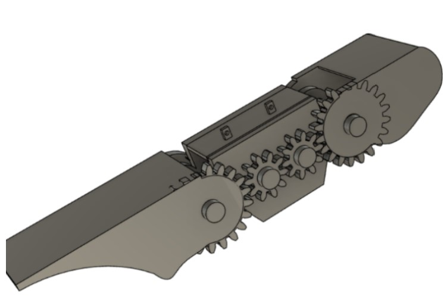

Finger Exoskeleton
Biomedical engineering project focused on a finger exoskeleton — full documentation and design process.

Overview
Biomedical engineering project focused on a finger exoskeleton, with full documentation and design process.
Problem
Assistive hand devices need careful mechanical design to support mobility and rehabilitation use cases.
Approach
Designed and documented a finger exoskeleton through an engineering design process.
My contribution
Led design and documentation of the exoskeleton project.
Technical details
Mechanical design · biomedical engineering · assistive hardware.
Impact
Documented engineering process for an assistive finger exoskeleton.